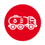
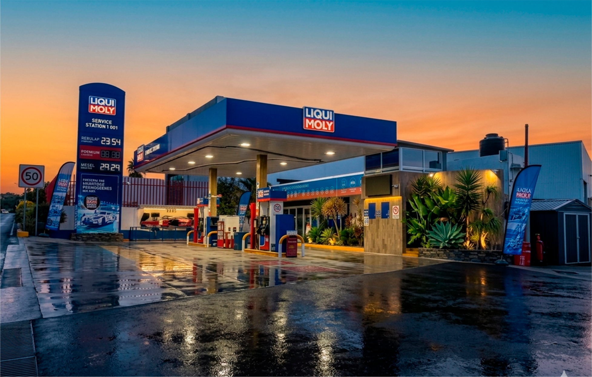
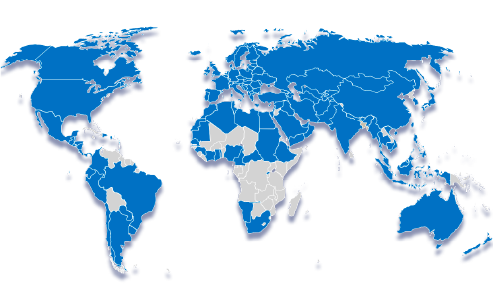
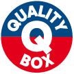
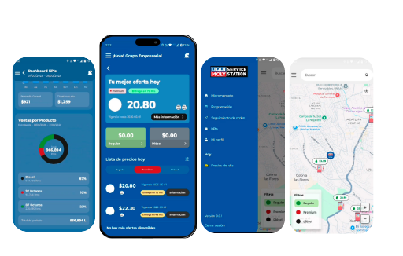

01
Inteligencia de compra de combustible
Compara, elige y maximiza margen en cada pipa.

Hecho por gasolineros para gasolineros.
Esta versión evoluciona la landing a una experiencia más dinámica: una portada comercial breve y, después, vistas independientes dentro de la misma pantalla, con retorno inmediato al inicio.
El usuario entra por una portada de alto impacto y luego navega cada bloque como si fueran pantallas internas, sin abandonar el flujo principal ni abrir ventanas nuevas.
Antes de hablar del modelo, conviene abrir con el respaldo que existe detrás: presencia internacional, trayectoria en México y liderazgo en Alemania.
Permite presentar la fuerza de la marca sin saturar la portada ni obligar al usuario a encontrar esta información entre demasiado texto.

Esta pantalla debe contar, en pocos segundos, qué representa LIQUI MOLY Service Station y por qué es relevante para una estación de servicio en México.

Calidad al máximo nivelLa promesa de marca se traduce en operación, imagen y soporte.
Lectura rápidaEsta vista ayuda a que el usuario entienda el concepto sin tener que descifrar varios bloques apilados dentro de una sola landing lineal.
Aquí la explicación gana claridad al ocupar su propia “pantalla”. El visitante ya no ve un párrafo aislado dentro de una landing larga, sino una vista dedicada a entender el producto.
En esta evolución conviene jerarquizar así: titular corto, descripción clara, 3 argumentos clave y CTA al siguiente paso.
Esta pantalla concentra únicamente los beneficios para que el usuario no los pierda entre otros mensajes. La lectura mejora porque cada beneficio tiene su propio bloque y jerarquía.

Compara, elige y maximiza margen en cada pipa.
Imagen que atrae y un concepto diseñado para fidelizar.
Tu operación completa, en la palma de tu mano.
Respaldo operativo para acompañar el desempeño de la estación.
En vez de dejar el video enterrado en medio del scroll, esta propuesta lo lleva a una vista específica. Aquí se puede insertar el video real, un reel comercial o un demo del producto.
Aquí puede insertarse el video oficial manteniendo la navegación y el botón de retorno dentro de la misma interfaz.
La conversión tiene su propio espacio para evitar que se diluya al final de un scroll largo. En la versión productiva aquí convendría integrar formulario, WhatsApp, datos de contacto y un botón directo de solicitud.